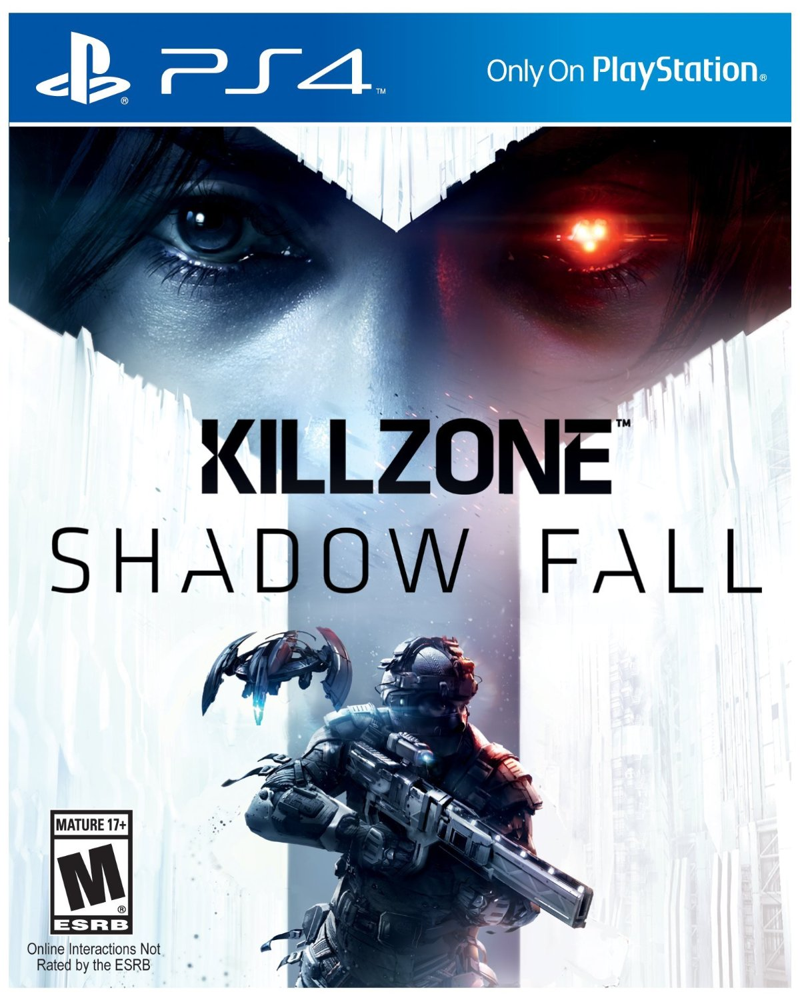
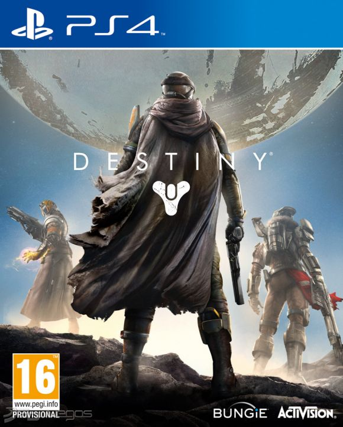
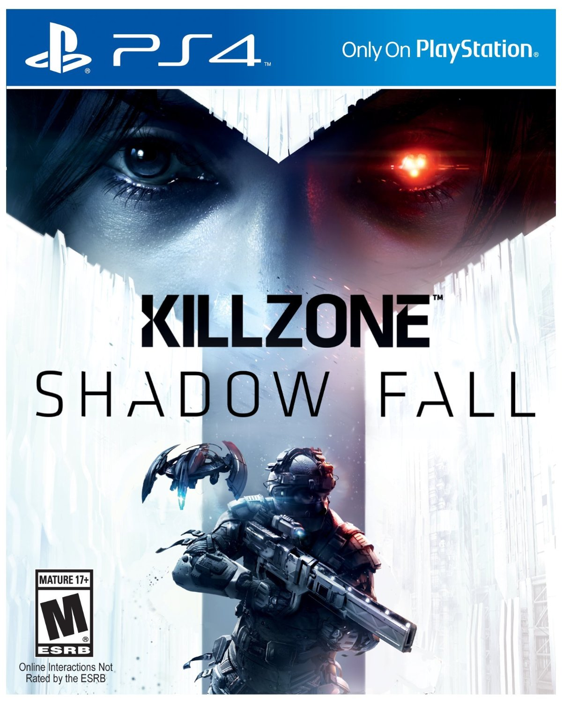
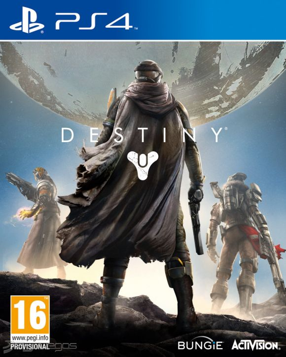

PlayStation 4 es la cuarta videoconsola del modelo PlayStation.8 Forma parte de las videoconsolas de octava generación. Fue anunciada oficialmente el 20 de febrero de 2013 en el evento PlayStation Meeting 2013, aunque el diseño de la consola no fue presentado hasta el 10 de junio en el E3 2013. Es la sucesora de la PlayStation 3 y actualmente compite con la Xbox One de Microsoft y la Wii U de Nintendo.
 




Horizon Zero Dawn es un videojuego de acción, aventura y de mundo abierto desarrollado por Guerrilla Games y distribuido por Sony Interactive Entertainment, únicamente para PlayStation 4. Inicialmente saldría a la venta a finales de 2016
Killzone: Shadow Fall es un videojuego de acción en primera persona, desarrollado por Guerrilla Games y publicado por Sony Computer Entertainment, es un título exclusivo de PlayStation 4. Será el sexto partido en toda la serie Killzone y el cuarto para consolas domésticas.
Destiny es un videojuego de disparos en primera persona, en forma de multijugador masivo en línea en un mundo abierto de ficción especulativa. Fue desarrollado por Bungie y publicado por Activision como parte de un contrato de producción de diez años. Se lanzó el 9 de septiembre de 2014 para PlayStation 3, PlayStation 4, Xbox 360 y Xbox One.
Grand Theft Auto V es un videojuego de acción-aventura de mundo abierto desarrollado por la compañía británica Rockstar North y distribuido por Rockstar Games. Fue lanzado el 17 de septiembre de 2013 para las consolas PlayStation 3 y Xbox 360.5 Posteriormente, fue lanzado para las consolas de nueva generación PlayStation 4 y Xbox One el 18 de noviembre de 2014